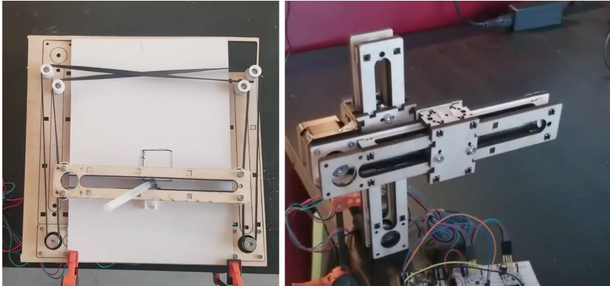

<h3> making@stanford Machine Building Workshop </h3>
<img src='./qr.png' alt='qr code' width='200'>
We invite up to 25 students of any background or skill level to participate in a 60-minute workshop. Participants will have the opportunity to work in small groups to design and build multiple-degree-of-freedom machines from scratch, which will be capable of sub-mm precision. All materials will be provided. No experience is necessary; topics covered include parametric CAD, design of mechanical assemblies, stepper motor control, system calibration and localization, and end-effector design. The workshop will emphasize the value of skill synthesis over mastery of any individual skill set. Through this group build project, participants will gain a holistic understanding of the processes involved in the design and prototyping of new and novel machines, and will be able to replicate these techniques on their own.
### Agenda
- 11:00: Introduction, overview, and examples
- 11:10: Assembly and control instructions
- 11:30: Brainstorm, sketch machine applications
- 11:45: Presentation and discussion
[Stepper Motor Overview](./steppers.html) <br>
[Stepper Motor Control with L9110](./L9110_step.html) <br>
<a href='./plank.dxf' download >Download the DXF file for laser cutting </a>
Examples:
- [Felly & Rebecca's Arigeta Suminagashi Machine](https://fellyliang.github.io/PS70/finalproject.html)
- [Rob's H-Bot](https://kem406.github.io/hbot/)
- [Kalos' Car](https://ingenuitive.github.io/PHYSCI-70/week10.html)
- [Sam's Page Turner](https://samjo4788.github.io/PHYSCI-70/Week10/index10.html)
- [Nathan's Wall Plotter](https://www.youtube.com/watch?v=xMw1Uj4MwNo&t=90s)
<h3> Assembling the Lasercut Parts </h3>
<p> The lasercut parts, in combination with 3D printed parts, can be used to create a range of different machines. </p>

<p> For example, an <a href='https://kem406.github.io/hbot/'>H-bot drawing machine</a> (left) or two connected linear stages (right). The linear stage assembly on the right also makes use of 2 angle (L) brackets installed between each motor and the wood plate. One is used to anchor the assembly to the table (via orange clamp). The other connects one stage to the other. </p>
<h3> Assembling the Lasercut Parts </h3>
<p>
<a href='./plank.dxf' download >Download the DXF file for laser cutting </a>
</p>
<p> Final assembly of one linear stage. </p>
<p> Begin by separating the wooden parts. Attach 2 vertical beams to the horizontal piece that connects to the motor. Pre-flex flexures to increase compliance (make it easier to put together). </p>
<p> Press a bearing into the 3D printed pulley. Insert bolt into hole on far end of the assembly. </p>
<p> Assembly the carriage with 4 bearings. Mount bearings vertically or horizontally depending on where loads on the machine will need to be countered. Insert 3D printed timing belt clip. </p>
<p> Cut timing belt to length. Assemble 3/4 of carriage around the long plate. </p>
<p> Close timing belt loop by pressing into the 3D printed clip. Cover with the top long plate. Finally, install top plate of carriage. </p>
<h3> Troubleshooting </h3>
<p> Once assembled, you should be able to move the carriage along the axis with a little force. If there seems to be too much friction, try reducing it with the following steps: </p>
<ul>
<li> Is the 3D printed pulley rubbing against the wood? Make sure the M5 screw is tightened. I've also found that there is not room for a washer underneath the bearing. </li>
<li> Are the internal hex nuts (the four nuts that each tighten a bearing against the wood) rubbing against the wood channel? You may need to rotate them (up to +/- 30 degrees) so that there is enough clearance. </li>
<li> In general, we've found that placing the bearings on the larger faces (i.e., opposite of what is shown in the preceding images) results in smoother motion. </li>
<li> Look down the length of the timing belt loop. Is the timing belt straight? You may need to raise or lower the aluminum pulley to make the timing belt as straight as possible. </li>
</ul>
</p>